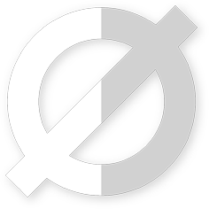

<nav class="navbar navbar-inverse navbar-fixed-top" role="navigation">
  <div class="container">
    <div class="navbar-header">
      <button class="navbar-toggle collapsed" type="button" data-toggle="collapse" data-target="#myNavbar">
        <span class="sr-only">Toggle navigation</span>
        <span class="icon-bar"></span>
        <span class="icon-bar"></span>
        <span class="icon-bar"></span>
      </button>
      <a class="navbar-brand" [routerLink]="['home']">
        <div>
           Overlapp
        </div>
      </a>
    </div>
    <div class="collapse navbar-collapse" id="myNavbar">
      <ul class="nav navbar-nav">
        <li>
          <a [routerLink]="['home']">Incio</a>
        </li>
      </ul>
      <ul class="nav navbar-nav navbar-right">
        <li class="dropdown">
          <a href="#" class="dropdown-toggle" data-toggle="dropdown" role="button">
            <span class="glyphicon glyphicon-user"></span>
            <span class="caret"></span>
          </a>
          <ul class="dropdown-menu" role="menu">
            <li>
              <a [routerLink]="['profile']">Perfil</a>
            </li>
            <li>
              <a [routerLink]="['editProfile']">Editar Perfil</a>
            </li>
            <li class="divider"></li>
            <li>
              <a [routerLink]="['/login']" (click)="logOut()">
                <span class="glyphicon glyphicon-log-out"></span> Cerrar Sesión
              </a>
            </li>
          </ul>
        </li>
      </ul>
    </div>
  </div>
</nav>
